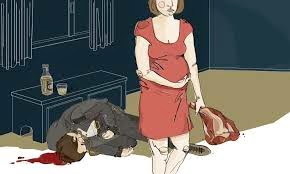

My Work------------------------------------------------------------------------------------------------------------------------------------This work is from my Digi Tec and English class. It's a reading response about “The lamb to the slaughter”. It’s a very interesting and enjoyable short story. I was deeply amazed by the emotional description and transformation of the characters in it.I was deeply amazed by the emotional description and transformation of the characters in it.